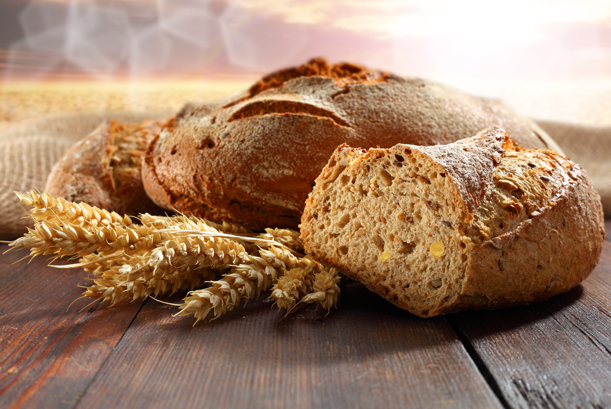

Receitas fáceis de se fazer em casa.

-Pão caseiro
Ingredientes:
- 500g de farinha de trigo;
- 10g de sal;
- 10g de açúcar;
- 7g de fermento biológico seco;
- 300ml de água morna;
- 2 colheres de sopa de óleo (opcional).
Como fazer:
- Misture o fermento e o açúcar na água morna e deixe descansar por cerca de 5-10 minutos até formar uma espuma na superfície.
- Em uma tigela grande, misture a farinha de trigo e o sal. Se estiver usando óleo, adicione também nesta etapa.
- Faça um buraco no centro da mistura de farinha e despeje a mistura de fermento. Comece a misturar os ingredientes, incorporando gradualmente a farinha até formar uma massa.
- Transfira a massa para uma superfície enfarinhada e comece a sová-la. Amasse por cerca de 10-15 minutos até que a massa fique lisa, elástica e não grude nas mãos.
- Coloque a massa de volta na tigela, cubra com um pano úmido e deixe descansar em um local quente por cerca de 1 hora ou até dobrar de tamanho.
- Após o tempo de descanso, retire a massa da tigela e coloque-a novamente na superfície enfarinhada. Amasse levemente para retirar o ar.
- Modele a massa em um formato de pão e coloque-a em uma forma para pão untada ou em uma assadeira.
- Cubra novamente com o pano úmido e deixe descansar por mais 30-45 minutos.
- Pré-aqueça o forno a 200°C.
- Asse o pão no forno pré-aquecido por cerca de 25-30 minutos, ou até que esteja dourado e faça um som oco quando batido na parte inferior.
- Retire do forno e deixe esfriar antes de servir.